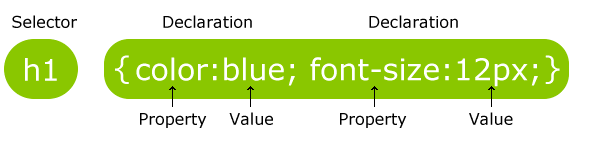

SINTAXIS Y SELECTORES CSS

Un conjunto de reglas CSS consta de un selector y un bloque de declaración:

EL punto selector para el elemento HTML que desea estilo.
El bloque de declaración contiene una o más declaraciones separadas por punto y coma. Cada declaración incluye un nombre de propiedad CSS y un valor, separados por dos puntos. Una declaración CSS siempre termina con un punto y coma, y los bloques de declaraciones están rodeados por llaves. En el siguiente ejemplo todos los elementos serán alineados-centro, con un color rojo texto:
Durango, Alicia. Diseño Web con CSS: 2ª Edición. IT Campus Academy, 2015.
Diseños web con CSS 2a Edicion